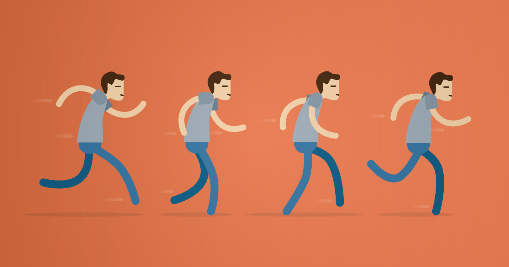
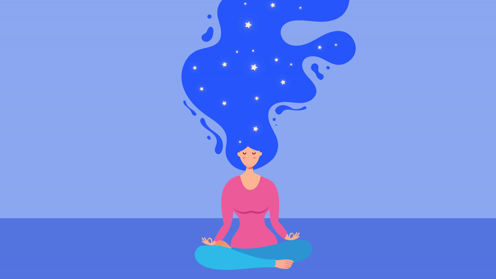

Healthy Habbits
TA behaviour that is beneficial to one’s physical or mental health, often linked to a high
level of discipline and self-control
Examples good habits Regular exercise, consumption of alcohol in moderation, balanced diet, monogamy, etc.
Examples bad habits Smoking, drug abuse, gambling, sexual promiscuity, poor sleep hygiene, high fat-, high
red meat diet

Yoga
It’s time to roll out your yoga mat and discover the combination of physical and mental
exercises that for thousands of years have hooked yoga practitioners around the globe. The beauty of yoga is
that you don’t have to be a yogi or yogini to reap the benefits. Whether you are young or old, overweight or
fit, yoga has the power to calm the mind and strengthen the body. Don’t be intimidated by yoga terminology,
fancy yoga studios and complicated poses. Yoga is for everyone.
Stretching
Stretching keeps the muscles flexible, strong, and healthy, and we need that flexibility to
maintain a range of motion in the joints. Without it, the muscles shorten and become tight. Then, when you
call
on the muscles for activity, they are weak and unable to extend all the way. That puts you at risk for joint
pain, strains, and muscle damage.

Meditation
Meditation is the habitual process of training your mind to focus and redirect your
thoughts.
The popularity of meditation is increasing as more people discover its many health benefits.
You can use it to increase awareness of yourself and your surroundings. Many people think of it as a way to
reduce stress and develop concentration. People also use the practice to develop other beneficial habits and
feelings
, such as a positive mood and outlook, self-discipline, healthy sleep patterns, and even increased pain
tolerance.